항공기관정비기능사 (2006-07-16 기출문제)
1과목: 비행원리
1. 조종간과 승강키가 기계적으로 연결되었을 경우, 조종력과 승강키의 힌지 모멘트에 대한 관계식을 가장 올바르게 나타낸 것은? (단, Fe : 조종력 He : 승강키 힌지 모멘트, K : 조종계통의 기계적 장치에 의한 이득)
- Fe = K / He
- Fe = He / K
- Fe = K × He
- Fe = K2 × He
(정답률: 78%)

2. 비행기의 조작 중에서 옆미끄럼 운동을 하였을 때 빗놀이와 동시에 옆놀이 운동이 생기는 현상은 무엇인가?
- 날개드롭
- 중력 커플링
- 버페팅
- 공력 커플링
(정답률: 56%)
3. 다음 ( ) 안에 알맞은 내용은?
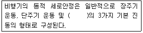
- 승강키 자유운동
- 옆놀이 자유운동
- 빗놀이 자유운동
- 선회 자유운동
(정답률: 62%)
4. 동력장치가 없고 고정날개를 가진, 공기보다 무거운 항공기는?
- 비행선
- 활공기
- 오토자이로
- 기구
(정답률: 62%)
5. 날개의 가로세로비가 6, 양력계수가 0.8이며, 스펜효율계수가 1일 때 유도항력계수는 얼마 정도인가?
- 0.034
- 0.042
- 0.⑤4
- 0.061
(정답률: 24%)
6. 베르누이의 정리에 대한 설명으로 가장 올바른 것은?
- 전압과 동압의 합이 일정하다.
- 정압이 일정하다.
- 동압이 일정하다.
- 전압이 일정하다.
(정답률: 58%)
7. 비행기가 선회각  로 정상 수평선회비행할 때, 하중배수(n)는 얼마인가?
로 정상 수평선회비행할 때, 하중배수(n)는 얼마인가?
- cos
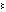
- 1 / cos

- sin

- 1 / sin

(정답률: 52%)
8. 비행기의 무게가 2,000kgf이고, 날개면적이 50m2 이며, 실속 받음각에서의 양력계수가 1.6 일 때 실속속도는? (단, 공기의 밀도는 kgf・sec2/m4 이다.)
- 68 km/h
- 70 km/h
- 72 km/h
- 76 km/h
(정답률: 65%)
9. 헬리콥터의 깃 비틀림 각에 대한 설명으로 가장 올바른 내용은?
- 비틀림 각을 크게 하면 정지비행 성능이 좋아진다.
- 비틀림 각을 크게 하면 전진비행 성능이 좋아진다.
- 비틀림 각을 적게 하면 정지비행 성능이 좋아진다.
- 비틀림 각과 비행성능은 관계가 없다.
(정답률: 42%)
10. 날개뿌리(wing root) 시위와 날개 끝(wing tip) 시위와의 비를 무엇이라 하는가?
- 가로세로비(aspect ratio)
- 테이퍼비(taper ratio)
- 뒤 젖힘각(sweep back angle)
- 붙임각
(정답률: 62%)
11. 피치 업(pitch up)이 발생 될 수 있는 원인으로 가장 관계가 먼 내용은?
- 뒤젖힘 날개의 날개 끝 실속
- 뒤젖힘 날개의 비틀림
- 승강키 효율의 증가
- 날개의 풍압중심이 앞으로 이동
(정답률: 61%)
12. 다음 중 무차원수가 아닌 것은?
- 마하수
- 속도
- 양력계수
- 레이놀즈수
(정답률: 72%)
13. 항력 D[kgf]인 비행기가 정상수평 비행을 할 때 속도V[m/s]를 내기 위한 필요마력(Pr)을 구하는 식은? (단, T 는 이용추력[kgf]이다.)
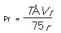
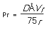
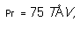
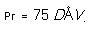
(정답률: 68%)
14. 헬리콥터에서 리드-래그 힌지 감쇠기를 설치하는 가장 큰 이유는 무엇인가?
- 회전면 내에 발생하는 진동을 감소시키기 위해
- 뿌리부분에 발생하는 굽힘력을 감소시키기 위해
- 돌풍에 의한 영향을 감소시키기 위해
- 기하학적인 불평형을 감소하기 위해
(정답률: 50%)
15. 극외권에 대한 설명으로 가장 올바른 것은?
- 구름의 생성, 비, 눈, 안개 등의 기상현상이 일어난다.
- 열권 위에 극외권이 있다.
- 대기권에서는 극외권의 기온이 가장 낮다.
- 전파를 흡수, 반사하는 작용을 하여 통신 에 영향을 끼친다.
(정답률: 81%)
16. 치수검사에 사용되는 측정기의 정도와 가장 거리가 먼 것은?
- 감도
- 신속도
- 정확도
- 정밀도
(정답률: 62%)
17. 공구, 부품 등의 정밀도 측정에 사용되고 기계기구의 점검 그 밖에 길이의 기준용으로 사용되고 있는 측정원기 중의 하나인 측정기는?
- 두께 게이지
- 마이크로 미터
- 다이얼 게이지
- 블록 게이지
(정답률: 40%)
18. 다음의 비파괴 검사방법 중에서 검출하기 쉬운 결함 방향에 대한 설명으로 틀린 것은?
- 자분탐상검사 : 자속과 직각방향
- 초음파검사 : 초음파 진행방향과 평행한 방향
- 와전류검사 : 소용돌이 전류흐름을 차단하는 방향
- 방사선검사 : 방사선 진행방향과 평행한 방향
(정답률: 28%)
19. 다음의 영문 물음에 가장 올바른 것은?
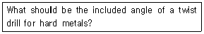
- 118°
- 90°
- 65°
- 45°
(정답률: 63%)
20. 항공기 운항이나 정비의 목적상 지상취급에 포함되지 않는 것은?
- Towing
- Mooring.
- Fueling
- Marshalling
(정답률: 35%)
2과목: 항공기정비
21. 다음 영문의 밑줄친 부분이 의미하는 것은?
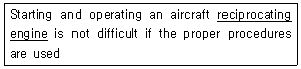
- 성형기관
- 대향형기관
- 왕복기관
- 공랭식기관.
(정답률: 71%)
22. 항공기 정비에서 안전결선작업에 관한 유의사항으로 가장 올바른 것은?
- 안전 결선용 와이어는 2회까지 재사용이 가능하다.
- 와이어를 펼 때 피막에 손상을 입혀서는 안된다.
- 와이어는 최대한 세게 당기면서 꼬임 작업을 한다.
- 매듭을 만들기 위해 와이어를 자를 때는 절단면을 날카롭게 자른다.
(정답률: 72%)
23. 화재의 종류별 진화방법이 잘못 연결된 것은?
- A급 화재 : 냉각법
- B급 화재 : 냉각법
- D급 화재 : 질식법
- C급 화재 : 질식법과 냉각법
(정답률: 56%)
24. 압력식 연료 보급법의 특징으로 틀린 것은?
- 주유시간 절약
- 연료 오염 가능성 감소
- 항공기 표피 손상 가능성 감소
- 항공기 접지 불필요
(정답률: 89%)
25. 항공기 정비 기술 정보에 해당되는 필요한 기술자료는?
- 도해부품목록(IPC)
- 정비교본(maintenance manual)
- 정비지원기술정보(service bulletin)
- 작동교본(operation manual)
(정답률: 47%)
26. 수세성 형광침투 검사에서 유제(Emulsifier)의 기능으로 가장 올바른 것은?
- 하위 결함지시를 제거하여 준다.
- 침투제를 물로 세척할 수 있게 해 준다.
- 현상제의 흡입작용을 도와준다.
- 침투제의 침투능력을 증대시켜 준다.
(정답률: 43%)
27. 항공기가 운항 중에 고장 없이 그 기능을 정확하고 안전하게 발휘 할 수 있는 능력을 무엇이라 하는가?
- 감항성
- 쾌적성
- 정시성
- 경제성
(정답률: 84%)
28. 최소 측정값이 1/1000인치인 버니어 캘리퍼스의 다음 그림의 측정값은 얼마인가?
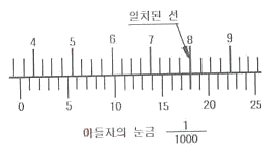
- 0.366 인치
- 0.367 인치
- 0.368 인치
- 0.369 인치
(정답률: 88%)
29. 장비 및 기기가 수리, 조절 및 검사 중일 때 이들 장비의 작동을 방지하기 위하여 사용되는 안전색채는?
- 검은색
- 황색
- 청색
- 적색
(정답률: 55%)
30. 항공기 정비작업의 산업재해에서 작업자의 책임으로 가장 거리가 먼 내용은?
- 규정과 절차의 준수
- 안전시설의 관리
- 보호장구 착용
- 사고 잠재요인 제거
(정답률: 53%)
31. 렌치의 종류 중에서 한쪽 방향으로만 움직이고 반대쪽 방향은 록크(lock)가 되며 작업속도가 가장 빠른 렌치는?
- Offset box wrench
- Open-end wrench
- Combination wrench
- Ratcheting box-end wrench
(정답률: 69%)
32. 리벳의 보호막(Protective Coating)은 색깔로 구별하는데 크롬산 아연으로 칠한 것은 어떤 색인가?
- 은색
- 회색
- 노랑색
- 진주색
(정답률: 54%)
33. 도면에서 은선(hidden line)은?
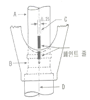
- A
- B
- C
- D
(정답률: 51%)
34. 항공기 정비에서 잭 작업(jacking)에 대한 설명 중 가장 거리가 먼 내용은?
- 착륙장치의 바퀴 하나만 들어 올릴 때에는 단일 잭을 사용한다.
- 항공기의 잭 작업은 주로 실외에서 실시해 야 하며, 항공기의 정명은 바람의 방향과 반대방향이 되도록 한다.
- 항공기는 최소 높이로 올리된 잭의 안전성을 보장할 수 있는 잭의 제한 길이 이내로 올린다.
- 항공기를 들어올릴 때에는 각 잭마다 한사람씩 있어야 하며 주관자의 지시에 따른다.
(정답률: 73%)
35. 항공기의 정비에서 보수에 대한 설명으로 가장 올바른 것은?
- 감항성에 영향을 끼치는 항공기 각 부분의 점검, 조절, 검사 및 부품의 교환 등을 말한다.
- 항공기의 부품 및 장비의 손상이나 기능 불량 등을 원래의 상태로 회복시키는 작업을 말한다.
- 기본 구조 부분의 강도에 상당한 영향을 끼칠 염려가 있는 수리 등의 작업을 말한다.
- 항공기나 장비 및 부품에 대한 원래의 설계를 변경하거나 새로운 부품을 추가로 장착시킬 때 실시하는 작업을 말한다.
(정답률: 33%)
36. 다음 ( )안에 알맞은 내용은?
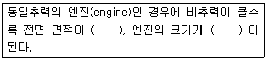
- 넓어지고, 소형
- 넓어지고, 대형
- 좁아지고, 소형
- 좁아지고, 대형
(정답률: 36%)
37. 항공기용 왕복기관에 대한 설명 중 가장 관계가 먼 내용은?
- 대향형 기관의 실린더 수는 항상 짝수이다.
- 1렬 성형 기관의 실린더 수는 항상 홀수이다.
- V형 기관의 실린더 수는 항상 홀수이다.
- 대향형 기관은 경비행기와 경헬리콥터에 주로 사용된다.
(정답률: 62%)
38. 열기관을 내연기관과 외연기관으로 크게 분류할 때 외연 기관은?
- 가스터빈 기관
- 증기 기관
- 가솔린 기관
- 디젤 기관
(정답률: 53%)
39. 실린더 배럴을 헤드에 접합하는 방법으로 가장 관계가 먼 것은?
- 나사접합(the threaded joint)
- 스터드-너트접합(stud and nut fit)
- 수축접합(shrink fit)
- 압력접합(pressure fit)
(정답률: 40%)
40. 플로우트식 기화기에서 플로우트실의 연료수준과 분사노즐의 수준과의 관계를 가장 올바르게 설명한 것은?
- 플로우트실의 연료수준이 분사노즐 수준보다 높아야 한다.
- 플로우트실의 연료수준과 분사노즐 수준은 같아야 한다.
- 플로우트실의 연료수준이 분사노즐 수준보다 낮아야 한다.
- 플로우트실의 연료수준과 분사노즐 수준과는 관계 없다.
(정답률: 37%)
3과목: 항공기관
41. 왕복기관에서 과급기(Supercharge)가 없는 기관의 매니폴드 압력은 대기압과 어떤 관계가 있는가?
- 대기압보다 높다.
- 대기압과 같다.
- 대기압보다 낮다.
- 낮은 고도에서는 회전속도에 따라 높낮이가 달라진다.
(정답률: 68%)
42. 다음은 마그네토의 형식을 표시한 것이다. 형식에 대한 각 요소의 설명 중 틀린 것은?
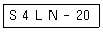
- S : 비행기 형식을 표시
- 4 : 실린더 수
- L : 구동축에서 본 마그네토의 회전방향
- N : 제작회사 표시
(정답률: 33%)
43. 터보 제트 기관의 추진효율에 대한 설명으로 가장 올바른 것은?
- 기관에 공급된 연료에너지와 전환된 기계적 에너지와의 비를 말한다.
- 공기가 기관을 통과하면서 얻은 운동에너지에 의한 동력과 추진동력의 비를 말한다.
- 공급된 연료에너지에 의해 변환된 추력 동력과의 비를 말한다.
- 공기가 기관을 통과하면서 외부로 방출한 열에너지에 의한 동력과 추진 동력의 비를 말한다.
(정답률: 46%)
44. 축류식 압축기에서 로우터 깃과 스테이터 깃은 어떤 작용을 하는가?
- 공기 속도를 증가시키고 압력을 감소시킨다.
- 공기 속도를 증가시키고 압력을 증가시킨다.
- 공기 속도를 감소시키고 압력을 감소시키다.
- 공기 속도를 감소시키고 압력을 증가시킨다.
(정답률: 55%)
45. 윤활유의 작용으로 가장 거리가 먼 것은?
- 마찰 작용
- 기밀 작용
- 방청 작용
- 냉각 작용
(정답률: 46%)
46. 물분사장치는 어떠한 방법으로 항공기 엔진의 추력을 증가시키는가?
- 압축기 블레이드를 세척함으로서 공기의 저항을 감소시키고 추력을 증가시킨다.
- 엔진에 흐르는 공기의 질량과 밀도를 증가 시킴으로서 추력을 증가시킨다.
- 터빈 배기가스의 온도를 내려줌으로서 추력을 증가시킨다.
- 엔진의 흡입구의 온도를 증가시킴으로서 추력을 증가시킨다.
(정답률: 59%)
47. 많은 양의 공기를 비교적 느린 속도로 분사시켜 추력을 얻는 가스터빈 기관은?
- 터보프롭 엔진
- 터보노즐 엔진
- 터보제트 엔진
- 터보팬 엔진
(정답률: 44%)
48. 가스터빈 기관의 연료 노즐로서 복식노즐을 가장 올바르게 설명한 것은?
- 시동시 연료분사 각도를 작게 해준다.
- 2차 연료는 좁은 각도로 멀리 분사되도록 한다.
- 1차 연료는 완속속도 이상에서 작동된다.
- 2차연료는 연소실 벽에 직접 연료가 닿게 한다.
(정답률: 62%)
49. 항공용 가솔린의 ASTM 규격에서 가솔린의 색깔이 자색인 등급은?
- 91 / 98
- 100 / 130
- 108 / 135
- 115 / 145
(정답률: 45%)
50. 저장된 기관의 상태는 기관을 보관하는 금속용기에 장착된 습도 지시계의 색깔로 판별된다. 습도 지시계의 색깔 중에서 가장 안전한 상태를 나타내는 것은?
- 청색
- 백색
- 분홍색
- 붉은색
(정답률: 73%)
51. 가스터빈 엔진(gas turbine engine)에서 연료 트림(fuel trim)이란?
- 엔진의 정해진 회전(R.P.M)에서 정격추력을 내도록 연료조정장치(F.C.U)를 조정하는 것이다.
- 엔진(emgine)의 회전수(R.P.M)를 조정하는 것이다.
- 엔진(emgine)의 압력비를 조절하는 것이다.
- 엔진(emgine)의 배기를 조절하는 것이다.
(정답률: 65%)
52. 프로펠러의 구조와 관계 없는 것은 무엇인가?
- 스피너
- 허브
- 생크
- 깃
(정답률: 67%)
53. 왕복기관에서 자연발화에 의해 기관에 큰 소음과 진동, 출력 감소 및 기관 과열 등의 원인이 될 수 있는 현상은?
- 노킹(knocking)
- 킥백(kick back)
- 베이퍼록(vapor lock)
- 조기점화
(정답률: 62%)
54. 실린더의 행정체적이 960cm3이고 연소실 체적이 160cm3인 실린더의 압축비는?
- 5
- 7
- 9
- 11
(정답률: 54%)
55. 가스터빈 엔진의 윤활계통에 사용되고 있는 윤활유 펌프의 형태가 아닌 것은?
- 피스톤형
- 기어형
- 제로터형
- 베인형
(정답률: 44%)
56. 가스터빈 기관에서 연소효율에 대한 내용으로 가장 올바른 것은?
- 공급된 열량과 공기의 실제 증가된 에너지(엔탈피)의 비를 말한다.
- 연소효율은 압력 및 온도가 낮을수록 높아진다.
- 연소효율은 공기의 속도가 클수록 높아진다.
- 보통 연소효율은 70%이상이어야 한다.
(정답률: 59%)
57. 지름이 140mm 인 피스톤에 60kgf/cm2 의 가스압력이 작용하면 피스톤에 미치는 힘은 약 얼마인가?
- 6,232 kgf
- 7,232 kgf
- 8,232 kgf
- 9,232 kgf
(정답률: 33%)
58. 터빈노즐 다이어프램의 역할로 가장 관계가 먼 것은?
- 연소가스의 흐름방향을 바꾼다.
- 연소가스의 속도를 증가시킨다.
- 압력과 온도를 감소시킨다.
- 엔진가속을 빨리시킨다.
(정답률: 23%)
59. +27°C를 절대 온도로 환산하면 얼마인가?
- 200 K
- 300 K
- 400 K
- 500 K
(정답률: 63%)
60. 가스 터빈 엔진에서 연료와 공기가 혼합되는 부분은?
- 압축기부분(compressor section)
- 연소실(combution section)
- 터빈부분(turbine section)
- 흡입부분(intake section)
(정답률: 60%)